Overview
What I Built
In this assignment I built a 2D rasterizer from scratch capable of rendering SVG files and translating vector geometry into pixels on the screen. I implemented triangle rasterization, supersampling for anti-aliasing, barycentric coordinate interpolation, texture mapping with mipmaps, and 2D transformations to correctly position and scale objects. A big part of the project was understanding the importance of linear algebra formulas, and how sampling affects visual quality and performance. Especially when comparing different sampling rates and pixel/level sampling strategies. The most interesting thing I learned was how something that feels visually simple—like drawing a triangle—is actually a careful balance of math, memory layout, and precision happening per pixel.
Task 1
Drawing Single-Color Triangles
To rasterize a triangle, I first had to define in my own terms what rasterization is. Rasterization is the process of taking given shapes, or even straight lines, into rendered pixels on the screen. After defining it, I was able to come up with my approach. First, I compute a bounding box, the smallest rectangle that fits around the triangle. From finding the bounding box, the minimum and maximum x and y values across the three vertices are found. Then I loop over every pixel within that rectangle, testing each one to determine if it falls inside the triangle.
The Inside test formula: \[ L(x,y) = -(x - x_A)(y_B - y_A) + (y - y_A)(x_B - x_A) \] I compute this for all three edges (P0→P1, P1→P2, P2→P0), testing the pixel's center point at (x+0.5, y+0.5). If all three L values are ≥ 0, or all three are ≤ 0 (to handle both winding orders), the point is inside and I call fill_pixel to color it.
My algorithm is no worse than one that checks every sample within the bounding box because that is exactly what it does! It loops over and colorize pixels only within the tight bounding box of the triangle. So in reality that box is more so a triangle. No unnecessary double-checking work is done beyond that pseudo triangle.
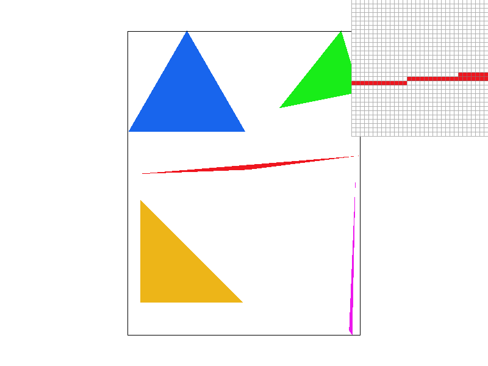
Task 2
Antialiasing by Supersampling
The core data structure I used is the recommended sample buffer a vector of Color objects sized with width x height x sample_rate. Instead of storing one color per pixel, it stores sample_rate sub-sample "grid" of colors per pixel, acting as a higher resolution intermediate buffer before the final image is written to screen.
For the algorithm I implemented, I divided each pixel into a \[√sample_rate * √sample_rate\] grid of sub-sample "squares in the grid" points. The step size between each sub-sample is \[1/√sample_rate\] and each point is tested at the center of its mini cell using this formula: \[(x + (i + 0.5) * stepSize, y + (j + 0.5) * stepSize)\]
Each sub-sample that passes the inside test gets it color written to sample_buffer using the index formula: \[(y * width + x) * sample_rate + (j * √rate +i) \] Finally resolve_to_framebuffer() averages all sub-samples per pixel and writes the result to the screen!
Why is Supersampling Useful?Supersampling reduces aliasing, the jagged staircase edges (missing pixels) that appear on thin or diagonal triangles when only one sample per pixel is used. By testing multiple points per pixel and averaging, pixels along triangle edges get intermediate color values rather than being fully on or off. This creates a smooth gradient, by combing pixels of varying opacity, that it tricks the eye into perceiving a cleaner, sharper edge.
My Modification to the PipelineI made four key changes:
- resized sample_buffer to width × height × sample_rate in both set_sample_rate() andset_framebuffer_target()
- added two inner loops in rasterize_triangle() to iterate over sub-samples
- updated fill_pixel() to write the same color to all sub-sample slots so points and lines still render correctly
- updated resolve_to_framebuffer() to average all sub-samples per pixel before writing to the framebuffer
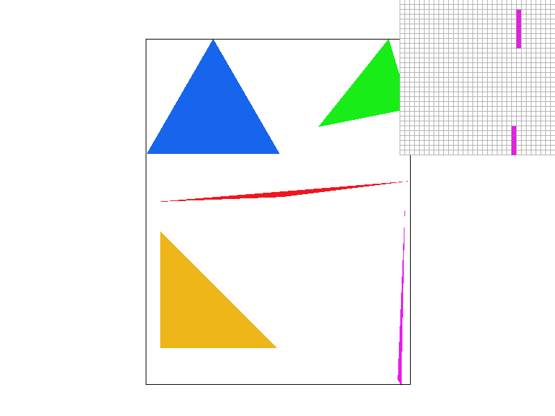
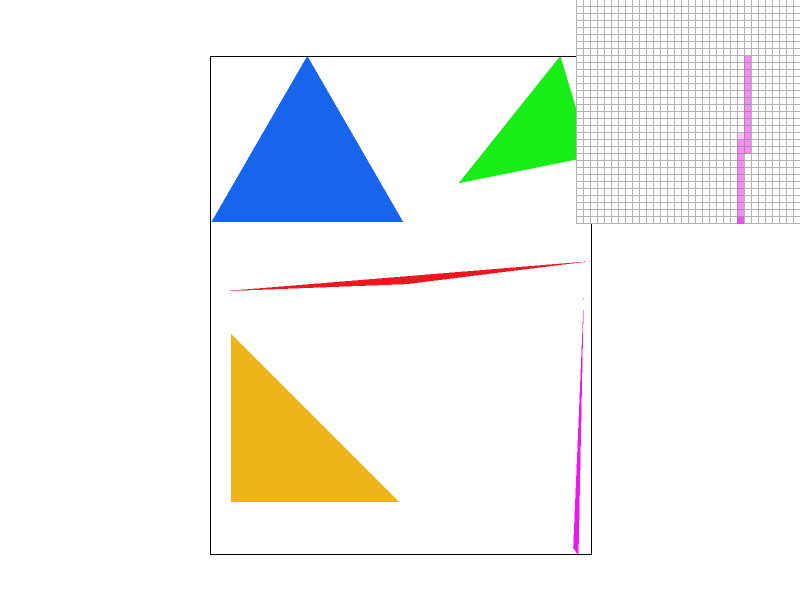
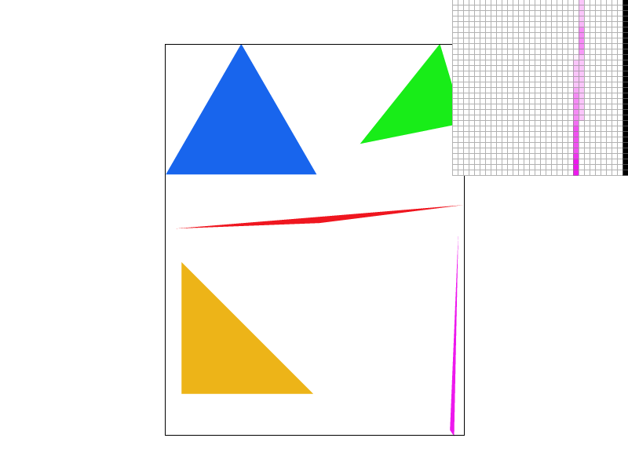
- At sample rate 1, thin triangle edges show harsh jagged aliasing because each pixel is either fully colored or not, there's no in-between
- At sample rate 4, the edges noticeably soften because now 4 sub-samples per pixel can partially pass the inside test, producing intermediate opacity values.
- At sample rate 16, edges are nearly smooth because 16 sub-samples give a much finer coverage estimate per pixel, making partial coverage along edges very accurately represented as a gradient of color intensity.
Task 3
Transforms
I transformed the base red "cubeman" into a simplified running version of Minecraft Steve. Minecraft's character design is already built around simple rectangular shapes, so the visual translation from cubeman to Steve felt natural! Anyone familiar with the game, or movie should recognize it immediately. To create the running pose I used all three transforms. I used rotate heavily on each limb individually to create the illusion of motion, arms and legs bent mid-stride rather than straight out. The key insight was that each rectangle in a limb needed its own separate rotate transform to sell the bending effect. I used translate to reposition limbs after rotating them so they stayed connected to the body. I also used scale to make the arms and legs more proportionate to the torso, since the default proportions felt too small.
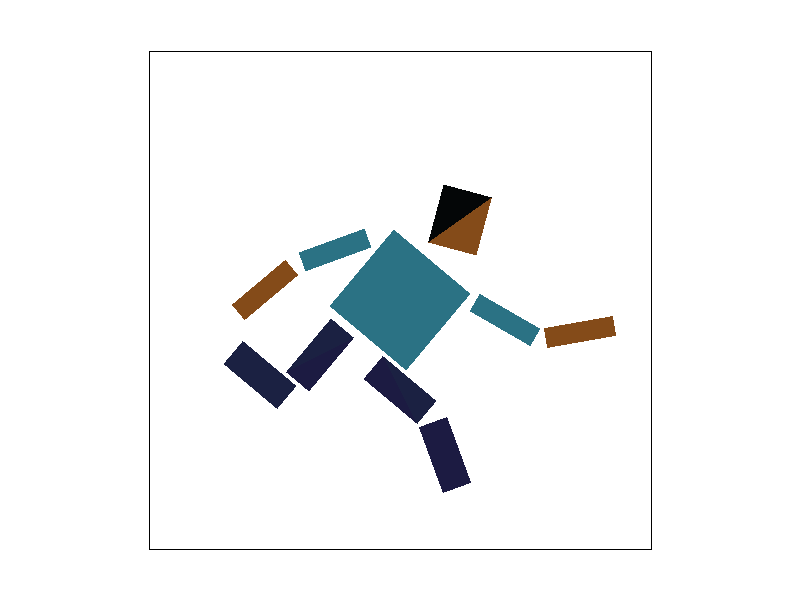
Task 4
Barycentric Coordinates
Barycentric coordinates is the necessary method to express any point inside a triangle as a weighted combination of its three vertices, A, B, C. Every point P inside a triangle with vertices A, B, C can be written following the formula:
The weights α, β, γ tell you how close the point is to each vertex, by taking the average. A point right on vertex A has α = 1, β = 0, γ = 0. Point in the dead center has α== β == γ = 1/3. This makes barycentric coordinates perfect for color interpolation! Color interpolation is a pixel near the red vertex gets mostly red, or near the green vertex gets most green, or near the blue vertex gets mostly blue.
I computed α, β, γ using the formulas from lecture that takes the distance between each vertex, relative to the point, and averages it all out. The color wheel confirms barycentric interpolation is working correctly, and the colors blend smoothly across with no harsh boundaries.
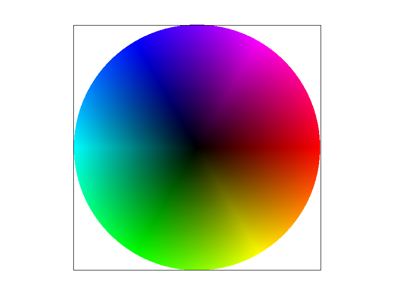
Task 5
Pixel Sampling for Texture Mapping
Pixel sampling is how we determine the color of each pixel when applying a texture to a triangle. Instead of computing a flat color like in Tasks 1-4, each pixel looks up its color from a texture image. I used barycentric coordinates to interpolate the texture coordinates (u,v) across each triangle, then sampled the texture at that point using either nearest or bilinear sampling. Nearest neighbor snaps directly to the closest single texel, fast but produces hard edges and blocky artifacts since there's no blending between neighboring texels. Bilinear takes the 4 surrounding texels and blends between them using three lerp (Linear interpolation) operations, two horizontal then one vertical. Similar to supersampling, averaging neighboring values creates smoother transitions at the cost of some sharpness.
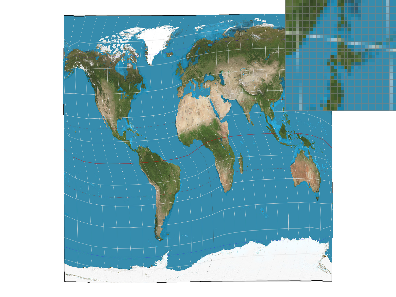
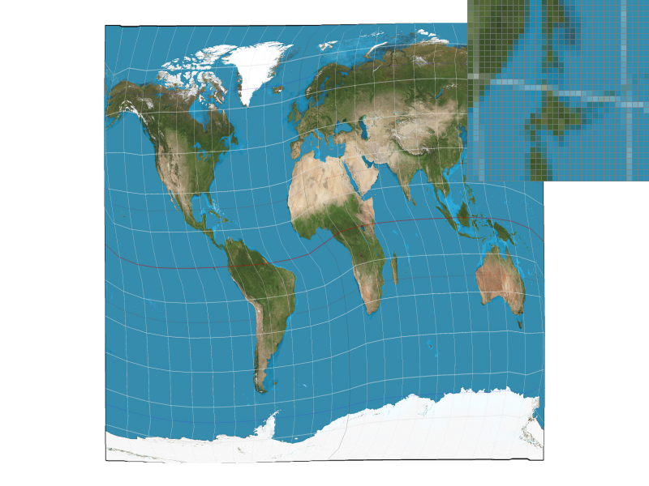
The difference is most dramatic at 1 sample per pixel. Nearest sampling shows obvious hard pixel boundaries, especially visible on the grid lines over the map, while bilinear produces smooth color transitions. At 16 samples per pixel the gap narrows significantly because supersampling already smooths geometry edges. However, looking closely, nearest at 16spp still shows some hard white pixel cutoffs while bilinear maintains more even color blending. When is the difference largest? When the texture is minified, many texture texels map to one screen pixel, nearest snaps to one arbitrarily chosen texel while bilinear averages the surrounding ones, producing much better results.
When is the difference largest?When the texture is minified, referenced from the lecture slides, many texture texels map to one screen pixel — nearest snaps to one arbitrarily chosen texel while bilinear averages the surrounding ones, producing much better results.
Task 6
Level Sampling with Mipmaps
Level sampling is the deciding variable for which level a mipmap will be. Moreover, level sampling answers a different question than pixel sampling which task 5 focused on. Pixel sampling, nearest vs bilinear, decides how we sample inside a single texture level. Level sampling decides which mipmap level we should sample from! This becomes important when textures are minified, meaning many texels map to a single screen pixel. If we always sample from the full resolution texture, high frequency detail collapses into noise.
My implementation of level selection is by computing barycentric coordinates not just at the current subsample position (x,y), but also at (x+1, y), and (x, y+1). From those three points, I interpolated the corresponding (u,v), (uDx,vDx), and (uDy,vDy). Inside get_level(), I computed the difference vectors:
I then scaled these by the base mipmap width and height to convert from normalized texture space into texel space. The magnitude of these vectors estimates how large the pixel’s footprint is inside the texture. I computed the level using:
This gives a floating point mip level. From there:
- L_ZERO always samples from level 0 (full resolution).
- L_NEAREST rounds L to the closest integer mip level and clamps it within bounds.
- L_LINEAR performs trilinear filtering by linearly interpolating between two adjacent mip levels.
For L_LINEAR, I computed:
where \( t = L - \lfloor L \rfloor \), blending between level floor(L) and floor(L)+1. This smooths out abrupt transitions between mip levels.
Tradeoffs: Speed · Memory · Antialiasing
| Technique | Speed | Memory | Antialiasing |
|---|---|---|---|
1 sample/px |
Fastest | Lowest | None — worst aliasing |
16 samples/px |
16× slower | 16× sample buffer | Strong — blurs geometry edges |
P_NEAREST |
Fast (1 lookup) | Texture only | Minimal texture smoothing |
P_LINEAR |
~4× texture lookups | Same | Good texture smoothing |
L_ZERO |
Fastest | No extra | None for minification |
L_NEAREST |
Fast | +33% (mipmap) | Good for minification |
L_LINEAR |
2× level lookups | +33% (mipmap) | Best — trilinear filtering |
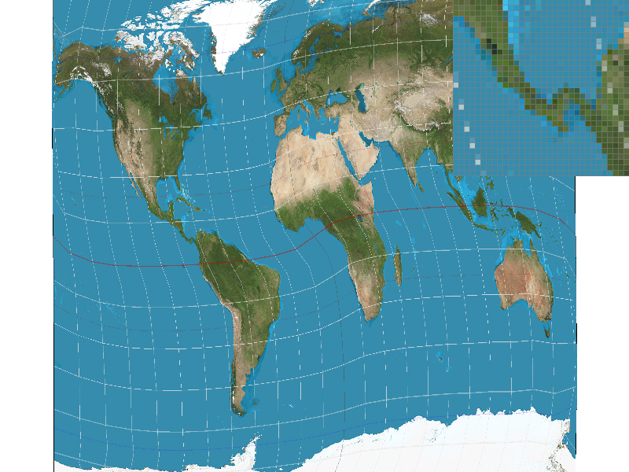
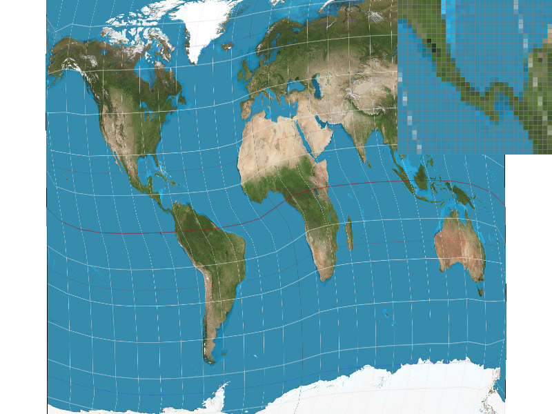
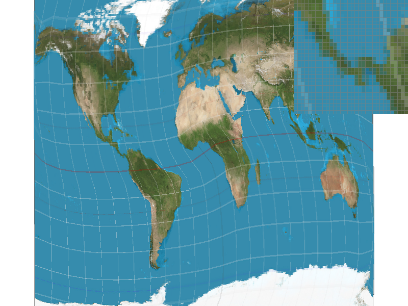
Tradeoffs:
- P_NEAREST + L_ZERO is fastest but produces the most aliasing during minification.
- P_LINEAR + L_ZERO smooths within a level but still shimmers when textures shrink.
- P_NEAREST + L_NEAREST stabilizes the image significantly but can show visible level switching.
- P_LINEAR + L_NEAREST (trilinear filtering) produces the smoothest and most stable result but costs more texture lookups and memory.
Even at 16 samples per pixel, level sampling still makes a visible difference when the texture is heavily minified. Supersampling smooths geometry edges, but mipmapping smooths texture frequency. They solve related but different problems.